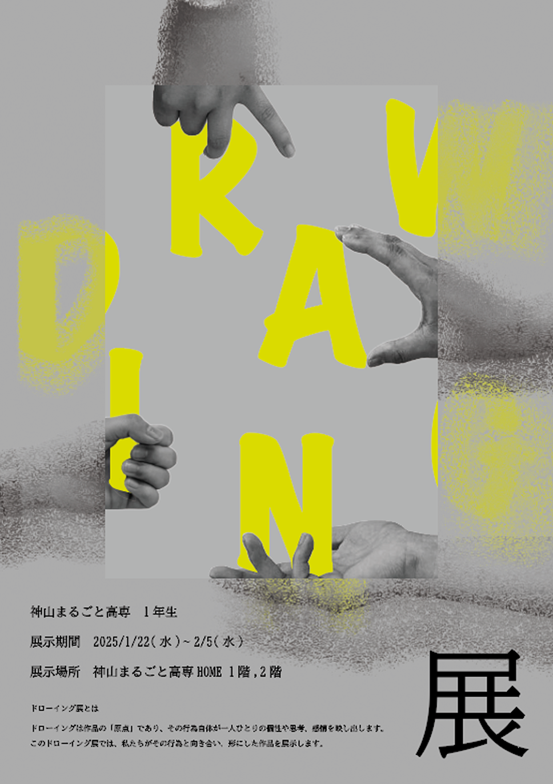
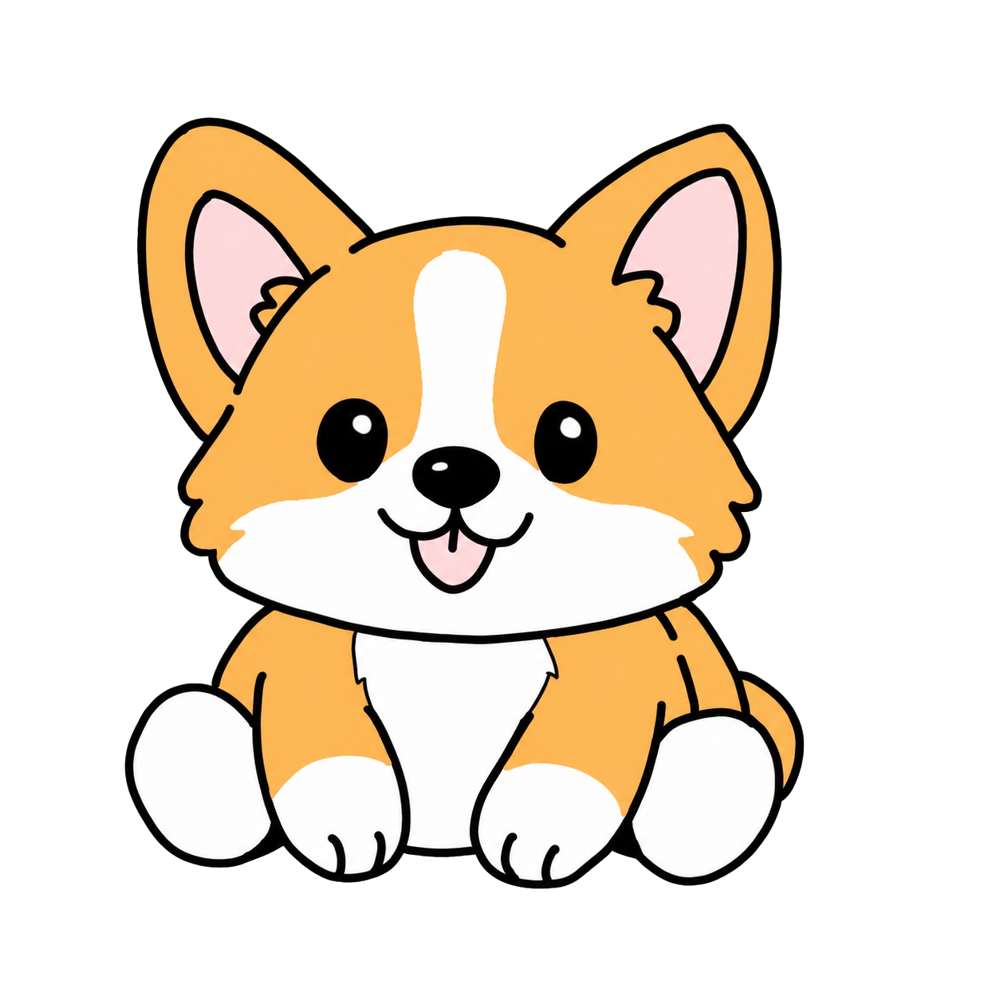

02 / MY STORY
STORY
今まで歩みをご覧ください。
TABLE OF CONTENTS
子供心を忘れない高専生
最終更新日 2026.08.07
02 / MY STORY
今まで歩みをご覧ください。
TABLE OF CONTENTS
02 / MY STORY — 02
2008/6/25
DIARY / 01
2兄弟の長女として、香川県に生まれる。泣くことも少なく。
おじいちゃんと共に育ち、おじいちゃん子になる。
02 / MY STORY — 03
15歳 / 高校受験
DIARY / 02
神山まるごと高専を知り、くることを決意。15歳で親から離れ寮生活を選ぶ。不安なこともありつつ、同じ決断をした仲間と今までと違う生活に。
03 / SELECTED WORKS
今まで作った作品についてご覧ください。
WORKS INDEX
03 / SELECTED WORKS — 01
2025/冬

WORK NOTE / 01
２人で行った作品の入り口の紹介になるポスター。デザインの趣味が違う中で一つのお題に対して、絶対に伝えたい思いと、自身たちの個性を結合。作品への繋がり、また、見かける人の興味の割合を考え、モノトーンでシンプルなのに目を引くデザインに。
03 / SELECTED WORKS — 02
2025/冬

WORK NOTE / 02
ドローイングとは作品の原点であり、その人の思考や感情を映し出す。私は自然と人を重ねて何かを考えることが多い。見る角度を変えることで日常の自然に隠れている人の影が見えるのを、顔の形がついたカーテン、背景と透過した人で表現した作品。

ページをひらいています